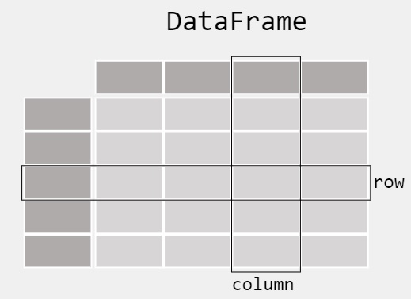
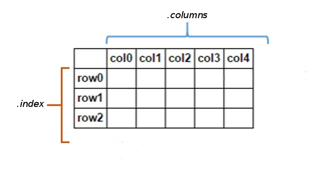

import pandas as pdLecture 6 - Data Manipulation with Pandas


- 6.1 Introduction to pandas
- 6.2 Importing Data and Summary Statistics
- 6.3 Rename, Index, and Slice
- 6.4 Creating New Columns, Reordering
- 6.5 Removing Columns and Rows
- 6.6 Merging DataFrames
- 6.7 Calculating Unique and Missing Values
- 6.8 Dealing With Missing Values: Boolean Indexing
- 6.9 Exporting A DataFrame to csv
- References
6.1 Introduction to pandas
pandas is a library designed for working with structured data, such as tabular data (e.g., from .csv files, Excel files) or relational databases (e.g., SQL).
The DataFrame object in
pandasis a 2-dimensional tabular, column-oriented data structure. The DateFrame is similar to an Excel spreadsheet and can store data of different types (including text characters, integers, floating-point values, categorical data, and more).

Figure source: Reference [2].The pandas name is derived from the term panel data, which is a term from economics for multi-dimensional structured data.
6.2 Importing Data and Summary Statistics
Let’s begin by importing the pandas package using the common abbreviation pd.
A wide range of input/output formats are supported by pandas:
- CSV, text
- SQL database
- Excel
- HDF5
- json
- html
- pickle
- sas, stata
- …
For importing .csv files, the function read_csv() in pandas allows to easily import data. By default, it assumes that the data is comma-separated, but we can also specify the delimiter used in the data (e.g., tab, semicolon, etc.). There are several parameters that can be specified in read_csv(). See the documentation here.
Let’s load the data in the file country-total file located in the folder data and save it under the name unemployment. This file contains unemployment information for several countries over a period of 30 years.
The function read_csv() returns a DataFrame, as shown below. Note that the DataFrame has 20,796 rows, and the output of the cell displayed only the first 5 and last 5 rows (or the first and last 30, depending on your system), since displaying all 20,976 rows is probably not what we want at this point anyway.
# Import data
unemployment = pd.read_csv('data/country_total.csv')
# Show the DataFrame
unemployment| country | seasonality | month | unemployment | unemployment_rate | |
|---|---|---|---|---|---|
| 0 | at | nsa | 1993.01 | 171000 | 4.5 |
| 1 | at | nsa | 1993.02 | 175000 | 4.6 |
| 2 | at | nsa | 1993.03 | 166000 | 4.4 |
| 3 | at | nsa | 1993.04 | 157000 | 4.1 |
| 4 | at | nsa | 1993.05 | 147000 | 3.9 |
| ... | ... | ... | ... | ... | ... |
| 20791 | uk | trend | 2010.06 | 2429000 | 7.7 |
| 20792 | uk | trend | 2010.07 | 2422000 | 7.7 |
| 20793 | uk | trend | 2010.08 | 2429000 | 7.7 |
| 20794 | uk | trend | 2010.09 | 2447000 | 7.8 |
| 20795 | uk | trend | 2010.10 | 2455000 | 7.8 |
20796 rows × 5 columns
We could have also used print to display the DataFrame.
print(unemployment) country seasonality month unemployment unemployment_rate
0 at nsa 1993.01 171000 4.5
1 at nsa 1993.02 175000 4.6
2 at nsa 1993.03 166000 4.4
3 at nsa 1993.04 157000 4.1
4 at nsa 1993.05 147000 3.9
... ... ... ... ... ...
20791 uk trend 2010.06 2429000 7.7
20792 uk trend 2010.07 2422000 7.7
20793 uk trend 2010.08 2429000 7.7
20794 uk trend 2010.09 2447000 7.8
20795 uk trend 2010.10 2455000 7.8
[20796 rows x 5 columns]When the DataFrames have a large number of rows that take a large portion of the screen, we can inspect the data by using the .head() method. By default, this shows the header (names of the columns, commonly referred to as column labels) and the first five rows (having indices ranging from 0 to 4, in the first column in the table). The indices are also referred to as row labels.
unemployment.head()| country | seasonality | month | unemployment | unemployment_rate | |
|---|---|---|---|---|---|
| 0 | at | nsa | 1993.01 | 171000 | 4.5 |
| 1 | at | nsa | 1993.02 | 175000 | 4.6 |
| 2 | at | nsa | 1993.03 | 166000 | 4.4 |
| 3 | at | nsa | 1993.04 | 157000 | 4.1 |
| 4 | at | nsa | 1993.05 | 147000 | 3.9 |
Passing an integer number as an argument to .head(n) returns that number of rows. To see the last \(n\) rows, use .tail(n).
# show the last 8 rows
unemployment.tail(8)| country | seasonality | month | unemployment | unemployment_rate | |
|---|---|---|---|---|---|
| 20788 | uk | trend | 2010.03 | 2437000 | 7.8 |
| 20789 | uk | trend | 2010.04 | 2419000 | 7.8 |
| 20790 | uk | trend | 2010.05 | 2419000 | 7.7 |
| 20791 | uk | trend | 2010.06 | 2429000 | 7.7 |
| 20792 | uk | trend | 2010.07 | 2422000 | 7.7 |
| 20793 | uk | trend | 2010.08 | 2429000 | 7.7 |
| 20794 | uk | trend | 2010.09 | 2447000 | 7.8 |
| 20795 | uk | trend | 2010.10 | 2455000 | 7.8 |
To find the number of rows in a DataFrame, you can use the len() function, as with Python lists and other sequences.
len(unemployment)20796Alternatively, we can use the shape attribute to find the numbers of rows and columns, as with NumPy arrays. The cell output is a tuple, showing that there are 20,796 rows and 5 columns. Note that the left-most column in the above table showing row indices is not part of the data.
unemployment.shape(20796, 5)A useful method that generates various summary statistics of a DataFrame is .describe(), as shown below.
Notice in the above cell that the DataFrame has 5 columns, but the first 2 columns (country and seasonality) have textual (strings) data, and therefore the summary statistics are shown only for the columns with numeric data (month, unemployment, and unemployment_rate). If .describe() is called on textual data only, it will return the count, number of unique values, and the most frequent value along with its count.
unemployment.describe()| month | unemployment | unemployment_rate | |
|---|---|---|---|
| count | 20796.000000 | 2.079600e+04 | 19851.000000 |
| mean | 1999.401290 | 7.900818e+05 | 8.179764 |
| std | 7.483751 | 1.015280e+06 | 3.922533 |
| min | 1983.010000 | 2.000000e+03 | 1.100000 |
| 25% | 1994.090000 | 1.400000e+05 | 5.200000 |
| 50% | 2001.010000 | 3.100000e+05 | 7.600000 |
| 75% | 2006.010000 | 1.262250e+06 | 10.000000 |
| max | 2010.120000 | 4.773000e+06 | 20.900000 |
It is also possible to calculate individual statistics, such as .min(), .max (), or .mean(), instead of using summary statistics with .describe().
unemployment.min()country at
seasonality nsa
month 1983.01
unemployment 2000
unemployment_rate 1.1
dtype: objectTo view the data types for each column, use the dtypes attribute of the unemployment DataFrame. The data types in this case are strings (object type), floats (float64 type), and integers (int64 type).
unemployment.dtypescountry object
seasonality object
month float64
unemployment int64
unemployment_rate float64
dtype: objectAnd one more way to get a summary of a DataFrame is by using info().
unemployment.info()<class 'pandas.core.frame.DataFrame'>
RangeIndex: 20796 entries, 0 to 20795
Data columns (total 5 columns):
# Column Non-Null Count Dtype
--- ------ -------------- -----
0 country 20796 non-null object
1 seasonality 20796 non-null object
2 month 20796 non-null float64
3 unemployment 20796 non-null int64
4 unemployment_rate 19851 non-null float64
dtypes: float64(2), int64(1), object(2)
memory usage: 812.5+ KBWe can retrieve the name of the columns in the unemployment DataFrame by using the attribute columns, as in the next cell.
unemployment.columnsIndex(['country', 'seasonality', 'month', 'unemployment', 'unemployment_rate'], dtype='object')Note that the type of the data for the returned column names is an Index object. We can also easily convert the column names into a list by using the method tolist().
unemployment.columns.tolist()['country', 'seasonality', 'month', 'unemployment', 'unemployment_rate']Alternatively, we can achieve the same by using the Python built-in function list.
list(unemployment.columns)['country', 'seasonality', 'month', 'unemployment', 'unemployment_rate']6.2.1 Import Data From a URL
Above, we imported the unemployment data using the function read_csv and a relative file path to the data directory. The function read_csv is very flexible and it also allows importing data using a URL as the file path.
A csv file with data on world countries and their abbreviations is located at https://raw.githubusercontent.com/dlab-berkeley/introduction-to-pandas/master/data/countries.csv
Using read_csv, we can import the country data and save it to the variable countries. This DataFrame has 30 rows.
countries = pd.read_csv('https://raw.githubusercontent.com/dlab-berkeley/introduction-to-pandas/master/data/countries.csv')
countries| country | google_country_code | country_group | name_en | name_fr | name_de | latitude | longitude | |
|---|---|---|---|---|---|---|---|---|
| 0 | at | AT | eu | Austria | Autriche | Österreich | 47.696554 | 13.345980 |
| 1 | be | BE | eu | Belgium | Belgique | Belgien | 50.501045 | 4.476674 |
| 2 | bg | BG | eu | Bulgaria | Bulgarie | Bulgarien | 42.725674 | 25.482322 |
| 3 | hr | HR | non-eu | Croatia | Croatie | Kroatien | 44.746643 | 15.340844 |
| 4 | cy | CY | eu | Cyprus | Chypre | Zypern | 35.129141 | 33.428682 |
| 5 | cz | CZ | eu | Czech Republic | République tchèque | Tschechische Republik | 49.803531 | 15.474998 |
| 6 | dk | DK | eu | Denmark | Danemark | Dänemark | 55.939684 | 9.516689 |
| 7 | ee | EE | eu | Estonia | Estonie | Estland | 58.592469 | 25.806950 |
| 8 | fi | FI | eu | Finland | Finlande | Finnland | 64.950159 | 26.067564 |
| 9 | fr | FR | eu | France | France | Frankreich | 46.710994 | 1.718561 |
| 10 | de | DE | eu | Germany (including former GDR from 1991) | Allemagne (incluant l'ancienne RDA à partir de... | Deutschland (einschließlich der ehemaligen DDR... | 51.163825 | 10.454048 |
| 11 | gr | GR | eu | Greece | Grèce | Griechenland | 39.698467 | 21.577256 |
| 12 | hu | HU | eu | Hungary | Hongrie | Ungarn | 47.161163 | 19.504265 |
| 13 | ie | IE | eu | Ireland | Irlande | Irland | 53.415260 | -8.239122 |
| 14 | it | IT | eu | Italy | Italie | Italien | 42.504191 | 12.573787 |
| 15 | lv | LV | eu | Latvia | Lettonie | Lettland | 56.880117 | 24.606555 |
| 16 | lt | LT | eu | Lithuania | Lituanie | Litauen | 55.173687 | 23.943168 |
| 17 | lu | LU | eu | Luxembourg | Luxembourg | Luxemburg | 49.815319 | 6.133352 |
| 18 | mt | MT | eu | Malta | Malte | Malta | 35.902422 | 14.447461 |
| 19 | nl | NL | eu | Netherlands | Pays-Bas | Niederlande | 52.108118 | 5.330198 |
| 20 | no | NO | non-eu | Norway | Norvège | Norwegen | 64.556460 | 12.665766 |
| 21 | pl | PL | eu | Poland | Pologne | Polen | 51.918907 | 19.134334 |
| 22 | pt | PT | eu | Portugal | Portugal | Portugal | 39.558069 | -7.844941 |
| 23 | ro | RO | eu | Romania | Roumanie | Rumänien | 45.942611 | 24.990152 |
| 24 | sk | SK | eu | Slovakia | Slovaquie | Slowakei | 48.672644 | 19.700032 |
| 25 | si | SI | eu | Slovenia | Slovénie | Slowenien | 46.149259 | 14.986617 |
| 26 | es | ES | eu | Spain | Espagne | Spanien | 39.895013 | -2.988296 |
| 27 | se | SE | eu | Sweden | Suède | Schweden | 62.198467 | 14.896307 |
| 28 | tr | TR | non-eu | Turkey | Turquie | Türkei | 38.952942 | 35.439795 |
| 29 | uk | GB | eu | United Kingdom | Royaume-Uni | Vereinigtes Königreich | 54.315447 | -2.232612 |
Similar to the above example, we can use shape and describe() the understand the countries DataFrame. In this case describe() is not very useful, because only 2 of the columns have numeric values.
countries.shape(30, 8)# explore the countries data
countries.describe()| latitude | longitude | |
|---|---|---|
| count | 30.000000 | 30.000000 |
| mean | 49.092609 | 14.324579 |
| std | 7.956624 | 11.257010 |
| min | 35.129141 | -8.239122 |
| 25% | 43.230916 | 6.979186 |
| 50% | 49.238087 | 14.941462 |
| 75% | 54.090400 | 23.351690 |
| max | 64.950159 | 35.439795 |
The method info() provides helpful information for this DataFrame.
# explore the countries data
countries.info()<class 'pandas.core.frame.DataFrame'>
RangeIndex: 30 entries, 0 to 29
Data columns (total 8 columns):
# Column Non-Null Count Dtype
--- ------ -------------- -----
0 country 30 non-null object
1 google_country_code 30 non-null object
2 country_group 30 non-null object
3 name_en 30 non-null object
4 name_fr 30 non-null object
5 name_de 30 non-null object
6 latitude 30 non-null float64
7 longitude 30 non-null float64
dtypes: float64(2), object(6)
memory usage: 2.0+ KB6.2.2 Import Data from Excel File
In a similar way, we can import data from an Excel file using the function read_excel().
titanic = pd.read_excel('data/titanic.xlsx')
titanicC:\Users\vakanski\AppData\Local\anaconda3\Lib\site-packages\openpyxl\worksheet\header_footer.py:48: UserWarning: Cannot parse header or footer so it will be ignored
warn("""Cannot parse header or footer so it will be ignored""")| pclass | survived | name | sex | age | sibsp | parch | ticket | fare | cabin | embarked | boat | body | home.dest | |
|---|---|---|---|---|---|---|---|---|---|---|---|---|---|---|
| 0 | 1 | 1 | Allen, Miss. Elisabeth Walton | female | 29.0000 | 0 | 0 | 24160 | 211.3375 | B5 | S | 2 | NaN | St Louis, MO |
| 1 | 1 | 1 | Allison, Master. Hudson Trevor | male | 0.9167 | 1 | 2 | 113781 | 151.5500 | C22 C26 | S | 11 | NaN | Montreal, PQ / Chesterville, ON |
| 2 | 1 | 0 | Allison, Miss. Helen Loraine | female | 2.0000 | 1 | 2 | 113781 | 151.5500 | C22 C26 | S | NaN | NaN | Montreal, PQ / Chesterville, ON |
| 3 | 1 | 0 | Allison, Mr. Hudson Joshua Creighton | male | 30.0000 | 1 | 2 | 113781 | 151.5500 | C22 C26 | S | NaN | 135.0 | Montreal, PQ / Chesterville, ON |
| 4 | 1 | 0 | Allison, Mrs. Hudson J C (Bessie Waldo Daniels) | female | 25.0000 | 1 | 2 | 113781 | 151.5500 | C22 C26 | S | NaN | NaN | Montreal, PQ / Chesterville, ON |
| 5 | 1 | 1 | Anderson, Mr. Harry | male | 48.0000 | 0 | 0 | 19952 | 26.5500 | E12 | S | 3 | NaN | New York, NY |
| 6 | 1 | 1 | Andrews, Miss. Kornelia Theodosia | female | 63.0000 | 1 | 0 | 13502 | 77.9583 | D7 | S | 10 | NaN | Hudson, NY |
| 7 | 1 | 0 | Andrews, Mr. Thomas Jr | male | 39.0000 | 0 | 0 | 112050 | 0.0000 | A36 | S | NaN | NaN | Belfast, NI |
| 8 | 1 | 1 | Appleton, Mrs. Edward Dale (Charlotte Lamson) | female | 53.0000 | 2 | 0 | 11769 | 51.4792 | C101 | S | D | NaN | Bayside, Queens, NY |
| 9 | 1 | 0 | Artagaveytia, Mr. Ramon | male | 71.0000 | 0 | 0 | PC 17609 | 49.5042 | NaN | C | NaN | 22.0 | Montevideo, Uruguay |
| 10 | 1 | 0 | Astor, Col. John Jacob | male | 47.0000 | 1 | 0 | PC 17757 | 227.5250 | C62 C64 | C | NaN | 124.0 | New York, NY |
| 11 | 1 | 1 | Astor, Mrs. John Jacob (Madeleine Talmadge Force) | female | 18.0000 | 1 | 0 | PC 17757 | 227.5250 | C62 C64 | C | 4 | NaN | New York, NY |
| 12 | 1 | 1 | Aubart, Mme. Leontine Pauline | female | 24.0000 | 0 | 0 | PC 17477 | 69.3000 | B35 | C | 9 | NaN | Paris, France |
| 13 | 1 | 1 | Barber, Miss. Ellen "Nellie" | female | 26.0000 | 0 | 0 | 19877 | 78.8500 | NaN | S | 6 | NaN | NaN |
| 14 | 1 | 1 | Barkworth, Mr. Algernon Henry Wilson | male | 80.0000 | 0 | 0 | 27042 | 30.0000 | A23 | S | B | NaN | Hessle, Yorks |
| 15 | 1 | 0 | Baumann, Mr. John D | male | NaN | 0 | 0 | PC 17318 | 25.9250 | NaN | S | NaN | NaN | New York, NY |
| 16 | 1 | 0 | Baxter, Mr. Quigg Edmond | male | 24.0000 | 0 | 1 | PC 17558 | 247.5208 | B58 B60 | C | NaN | NaN | Montreal, PQ |
| 17 | 1 | 1 | Baxter, Mrs. James (Helene DeLaudeniere Chaput) | female | 50.0000 | 0 | 1 | PC 17558 | 247.5208 | B58 B60 | C | 6 | NaN | Montreal, PQ |
| 18 | 1 | 1 | Bazzani, Miss. Albina | female | 32.0000 | 0 | 0 | 11813 | 76.2917 | D15 | C | 8 | NaN | NaN |
| 19 | 1 | 0 | Beattie, Mr. Thomson | male | 36.0000 | 0 | 0 | 13050 | 75.2417 | C6 | C | A | NaN | Winnipeg, MN |
Note that all DataFrames that we loaded so far in this Jupyter notebook, i.e., unemployment, countries, and titanic, are stored in the memory, and we can access them when needed once they are loaded. For example, we can check the shape of the titanic DataFrame.
titanic.shape(20, 14)6.2.3 Create a DataFrame
Alternatively, we can manually create DataFrames, instead of importing from a file. The following DataFrame called simple_table contains information from the titanic data. You can notice that the DataFrame is created similarly to creating a dictionary, where the column headers represent keys, and the data in each column are lists of values.
simple_table = pd.DataFrame({
"Name": ["Braund, Mr. Owen Harris",
"Allen, Mr. William Henry",
"Bonnell, Miss. Elizabeth"],
"Age": [22, 35, 58],
"Sex": ["male", "male", "female"]})
simple_table| Name | Age | Sex | |
|---|---|---|---|
| 0 | Braund, Mr. Owen Harris | 22 | male |
| 1 | Allen, Mr. William Henry | 35 | male |
| 2 | Bonnell, Miss. Elizabeth | 58 | female |
simple_table.shape(3, 3)We can use again the tolist() method to convert the values in a pandas DataFrame into a list, if we needed the data into a list format.
simple_table.values.tolist()[['Braund, Mr. Owen Harris', 22, 'male'],
['Allen, Mr. William Henry', 35, 'male'],
['Bonnell, Miss. Elizabeth', 58, 'female']]6.3 Rename, Index, and Slice
Let’s look again at the unemployment DataFrame. You may have noticed that the month column actually includes the year and the month added as decimals (e.g., 1993.01 should be year 1993 and month 01).
unemployment.head(3)| country | seasonality | month | unemployment | unemployment_rate | |
|---|---|---|---|---|---|
| 0 | at | nsa | 1993.01 | 171000 | 4.5 |
| 1 | at | nsa | 1993.02 | 175000 | 4.6 |
| 2 | at | nsa | 1993.03 | 166000 | 4.4 |
Let’s rename the column into year_month. The .rename() method allows modifying column and/or row names. As you can see in the cell below, we passed a dictionary to the columns parameter, with the original name month as the key and the new name year_month as the value. With this approach, we can rename several columns at the same time by providing the old and new names as keys and values in the dictionary. Importantly, we also set the inplace parameter to True, which indicates that we want to modify the original DataFrame, and not to create a new DataFrame.
unemployment.rename(columns={'month' : 'year_month'}, inplace=True)
unemployment.head(3)| country | seasonality | year_month | unemployment | unemployment_rate | |
|---|---|---|---|---|---|
| 0 | at | nsa | 1993.01 | 171000 | 4.5 |
| 1 | at | nsa | 1993.02 | 175000 | 4.6 |
| 2 | at | nsa | 1993.03 | 166000 | 4.4 |
To observe the effect of inplace=True, let’s run in the next cell another .rename() method to change the column country to year, but this time by omitting inplace=True.
unemployment.rename(columns={'country' : 'year'}).head(3)| year | seasonality | year_month | unemployment | unemployment_rate | |
|---|---|---|---|---|---|
| 0 | at | nsa | 1993.01 | 171000 | 4.5 |
| 1 | at | nsa | 1993.02 | 175000 | 4.6 |
| 2 | at | nsa | 1993.03 | 166000 | 4.4 |
The above code didn’t change the original unemployment DataFrame, as we can check that in the following cell. Instead, it created a copy of the unemployment DataFrame in which it changed the name of the column country.
unemployment.head(3)| country | seasonality | year_month | unemployment | unemployment_rate | |
|---|---|---|---|---|---|
| 0 | at | nsa | 1993.01 | 171000 | 4.5 |
| 1 | at | nsa | 1993.02 | 175000 | 4.6 |
| 2 | at | nsa | 1993.03 | 166000 | 4.4 |
An alternative way to rename the column is shown in the following cell. This code does not use inplace=True to modify the original DataFrame, but instead it creates a new DataFrame object with a renamed column and assigns it to the name unemployment.
unemployment = unemployment.rename(columns={'unemployment' : 'temporary_name'})
unemployment.head(3)| country | seasonality | year_month | temporary_name | unemployment_rate | |
|---|---|---|---|---|---|
| 0 | at | nsa | 1993.01 | 171000 | 4.5 |
| 1 | at | nsa | 1993.02 | 175000 | 4.6 |
| 2 | at | nsa | 1993.03 | 166000 | 4.4 |
Let’s change it back to the original column name.
unemployment = unemployment.rename(columns={'temporary_name': 'unemployment'})
unemployment.head(3)| country | seasonality | year_month | unemployment | unemployment_rate | |
|---|---|---|---|---|---|
| 0 | at | nsa | 1993.01 | 171000 | 4.5 |
| 1 | at | nsa | 1993.02 | 175000 | 4.6 |
| 2 | at | nsa | 1993.03 | 166000 | 4.4 |
6.3.1 Selecting Columns
To select a single column of the DataFrame, we can either use the name of the column enclosed in square brackets [] or the dot notation . (i.e., via attribute access). It is preferable to use the square brackets notation, since a column name might inadvertently have the same name as a built-in pandas method.
# access with square brackets
unemployment['year_month'].head()0 1993.01
1 1993.02
2 1993.03
3 1993.04
4 1993.05
Name: year_month, dtype: float64# access with dot notation
unemployment.year_month.head()0 1993.01
1 1993.02
2 1993.03
3 1993.04
4 1993.05
Name: year_month, dtype: float64When selecting a single column, we obtain a pandas Series object, which is a single vector of data with an associated array of index row labels shown in the left-most column.
A Series object in
pandasrepresents a 1-dimensional vector of data (i.e., a column of data).
If we check the type of the unemployment object and unemployment['year_month'] object, we can see that the first one is DataFrame and the second one is Series.
type(unemployment)pandas.core.frame.DataFrametype(unemployment['year_month'])pandas.core.series.Seriespandas provide many methods that can be applied to Series objects. A few examples are shown below.
print('minimum is ', unemployment['year_month'].min())
print('maximum is ', unemployment['year_month'].max())
print('mean value is ', unemployment['year_month'].mean())minimum is 1983.01
maximum is 2010.12
mean value is 1999.4012896710906To select multiple columns in pandas, use a list of column names within the selection brackets [].
unemployment[['country','year_month']].head()| country | year_month | |
|---|---|---|
| 0 | at | 1993.01 |
| 1 | at | 1993.02 |
| 2 | at | 1993.03 |
| 3 | at | 1993.04 |
| 4 | at | 1993.05 |
6.3.2 Selecting Rows
One way to select rows is by using the [] operator, similar to indexing and slicing in Python lists and other sequence data.
unemployment[0:4]| country | seasonality | year_month | unemployment | unemployment_rate | |
|---|---|---|---|---|---|
| 0 | at | nsa | 1993.01 | 171000 | 4.5 |
| 1 | at | nsa | 1993.02 | 175000 | 4.6 |
| 2 | at | nsa | 1993.03 | 166000 | 4.4 |
| 3 | at | nsa | 1993.04 | 157000 | 4.1 |
Another graphical representation of a DataFrame is shown in the figure below.

Figure source: Reference [2].The first column with the indices in pandas DataFrames does not need to be a sequence of integers, but it can also contain strings or other numeric data (e.g., dates, years).
For instance, let’s create a DataFrame called bacteria to see how indexing with string indices works. We again pass in a dictionary, with the keys corresponding to column names and the values to the data, and in addition we pass a list of strings called index. (Compare to the simple_table above, which does not use index for creating the DataFrame, and in that case, the indices were automatically set to integer numbers.)
bacteria = pd.DataFrame({'bacteria_counts' : [632, 1638, 569, 115],
'other_feature' : [438, 833, 234, 298]},
index=['Firmicutes', 'Proteobacteria', 'Actinobacteria', 'Bacteroidetes'])
bacteria| bacteria_counts | other_feature | |
|---|---|---|
| Firmicutes | 632 | 438 |
| Proteobacteria | 1638 | 833 |
| Actinobacteria | 569 | 234 |
| Bacteroidetes | 115 | 298 |
To return the labels for the columns and indices of a DataFrame in pandas, we can use the methods shown in the following celss. Note again that the type of the returned objects is Index object.
bacteria.columnsIndex(['bacteria_counts', 'other_feature'], dtype='object')bacteria.indexIndex(['Firmicutes', 'Proteobacteria', 'Actinobacteria', 'Bacteroidetes'], dtype='object')For selecting rows and/or columns in pandas, beside the use of square brackets, two other operators are used: .loc and .iloc.
The operator .loc accesses rows by using string indices (i.e., string locations), that is, it uses the labels of the rows for indexing.
The operator .iloc accesses rows by using integer indices (i.e., integer locations), that is, it uses the integer positions of the rows for indexing.
The operators .loc and .iloc can accept either a single index (e.g., 'f' or 5), a list of indices (e.g., ['a','f'] or [2,5]), or a slice of indices (e.g., 'a:f' or 2:5).
For instance, if we are interested in accessing the row Actinobacteria, we can use .loc and the index name. This returns the column values for the specified row.
bacteria.loc['Actinobacteria']bacteria_counts 569
other_feature 234
Name: Actinobacteria, dtype: int64The operator .iloc does not work with string indices, and it returns an error in the following cell.
bacteria.iloc['Actinobacteria']--------------------------------------------------------------------------- TypeError Traceback (most recent call last) Cell In[41], line 1 ----> 1 bacteria.iloc['Actinobacteria'] File ~\AppData\Local\anaconda3\Lib\site-packages\pandas\core\indexing.py:1191, in _LocationIndexer.__getitem__(self, key) 1189 maybe_callable = com.apply_if_callable(key, self.obj) 1190 maybe_callable = self._check_deprecated_callable_usage(key, maybe_callable) -> 1191 return self._getitem_axis(maybe_callable, axis=axis) File ~\AppData\Local\anaconda3\Lib\site-packages\pandas\core\indexing.py:1749, in _iLocIndexer._getitem_axis(self, key, axis) 1747 key = item_from_zerodim(key) 1748 if not is_integer(key): -> 1749 raise TypeError("Cannot index by location index with a non-integer key") 1751 # validate the location 1752 self._validate_integer(key, axis) TypeError: Cannot index by location index with a non-integer key
To access rows with .iloc, we need to provide integer indices. Note that we can still access the row with iloc, even though the indices are strings.
bacteria.iloc[2]bacteria_counts 569
other_feature 234
Name: Actinobacteria, dtype: int64In addition, we can also use “positional indexing” with square brackets [], as in slicing operations with list and other sequence objects.
bacteria[2:3]| bacteria_counts | other_feature | |
|---|---|---|
| Actinobacteria | 569 | 234 |
However, pandas doesn’t support indexing for accessing individual rows, and with positional indexing we need to use a slice (as in the above example bacteria[2:3]), otherwise, we will get an error.
bacteria[2]--------------------------------------------------------------------------- KeyError Traceback (most recent call last) File ~\AppData\Local\anaconda3\Lib\site-packages\pandas\core\indexes\base.py:3805, in Index.get_loc(self, key) 3804 try: -> 3805 return self._engine.get_loc(casted_key) 3806 except KeyError as err: File index.pyx:167, in pandas._libs.index.IndexEngine.get_loc() File index.pyx:196, in pandas._libs.index.IndexEngine.get_loc() File pandas\\_libs\\hashtable_class_helper.pxi:7081, in pandas._libs.hashtable.PyObjectHashTable.get_item() File pandas\\_libs\\hashtable_class_helper.pxi:7089, in pandas._libs.hashtable.PyObjectHashTable.get_item() KeyError: 2 The above exception was the direct cause of the following exception: KeyError Traceback (most recent call last) Cell In[44], line 1 ----> 1 bacteria[2] File ~\AppData\Local\anaconda3\Lib\site-packages\pandas\core\frame.py:4102, in DataFrame.__getitem__(self, key) 4100 if self.columns.nlevels > 1: 4101 return self._getitem_multilevel(key) -> 4102 indexer = self.columns.get_loc(key) 4103 if is_integer(indexer): 4104 indexer = [indexer] File ~\AppData\Local\anaconda3\Lib\site-packages\pandas\core\indexes\base.py:3812, in Index.get_loc(self, key) 3807 if isinstance(casted_key, slice) or ( 3808 isinstance(casted_key, abc.Iterable) 3809 and any(isinstance(x, slice) for x in casted_key) 3810 ): 3811 raise InvalidIndexError(key) -> 3812 raise KeyError(key) from err 3813 except TypeError: 3814 # If we have a listlike key, _check_indexing_error will raise 3815 # InvalidIndexError. Otherwise we fall through and re-raise 3816 # the TypeError. 3817 self._check_indexing_error(key) KeyError: 2
There is another important difference between the above two selections, as .loc and .iloc return a Series object because we selected a single label, while [2:3] returns a DataFrame because we selected a range of positions. Let’s check this.
type(bacteria.loc['Actinobacteria'])pandas.core.series.Seriestype(bacteria.iloc[2])pandas.core.series.Seriestype(bacteria[2:3])pandas.core.frame.DataFrameLet’s return to the unemployment data to show how .iloc is used, since unemployment has integer indices.
unemployment.iloc[0:4]| country | seasonality | year_month | unemployment | unemployment_rate | |
|---|---|---|---|---|---|
| 0 | at | nsa | 1993.01 | 171000 | 4.5 |
| 1 | at | nsa | 1993.02 | 175000 | 4.6 |
| 2 | at | nsa | 1993.03 | 166000 | 4.4 |
| 3 | at | nsa | 1993.04 | 157000 | 4.1 |
Note also that we can use loc with integer indices as well, however the output is different than .iloc. The difference is discussed in an upcoming section below.
unemployment.loc[0:4]| country | seasonality | year_month | unemployment | unemployment_rate | |
|---|---|---|---|---|---|
| 0 | at | nsa | 1993.01 | 171000 | 4.5 |
| 1 | at | nsa | 1993.02 | 175000 | 4.6 |
| 2 | at | nsa | 1993.03 | 166000 | 4.4 |
| 3 | at | nsa | 1993.04 | 157000 | 4.1 |
| 4 | at | nsa | 1993.05 | 147000 | 3.9 |
6.3.3 Selecting a Specific Value
Both .loc and .iloc can be used to select a particular value if they are given two arguments. The first argument is the row name (when using .loc) or the row index number (when using .iloc), while the second argument is the column name or index number.
Using .loc, we can select “Bacteroidetes” and “bacteria_counts” to get the count of Bacteroidetes, as in the next cell below.
bacteria| bacteria_counts | other_feature | |
|---|---|---|
| Firmicutes | 632 | 438 |
| Proteobacteria | 1638 | 833 |
| Actinobacteria | 569 | 234 |
| Bacteroidetes | 115 | 298 |
bacteria.loc['Bacteroidetes']['bacteria_counts']np.int64(115)# This is the same as above
bacteria.iloc[3][0]C:\Users\vakanski\AppData\Local\Temp\ipykernel_21848\1562859839.py:2: FutureWarning: Series.__getitem__ treating keys as positions is deprecated. In a future version, integer keys will always be treated as labels (consistent with DataFrame behavior). To access a value by position, use `ser.iloc[pos]`
bacteria.iloc[3][0]np.int64(115)# This the same as above
bacteria.iloc[3]['bacteria_counts']np.int64(115)Or, for the unemployment data:
# The year_month in the first row
unemployment.iloc[0,2]np.float64(1993.01)# This the same as above
unemployment.iloc[0][2]C:\Users\vakanski\AppData\Local\Temp\ipykernel_21848\2135515946.py:2: FutureWarning: Series.__getitem__ treating keys as positions is deprecated. In a future version, integer keys will always be treated as labels (consistent with DataFrame behavior). To access a value by position, use `ser.iloc[pos]`
unemployment.iloc[0][2]np.float64(1993.01)6.3.4 Selecting Multiple Rows and Columns
Both .loc and .iloc can be used to select subsets of rows and columns at the same time if they are given lists as arguments, or slices for .iloc.
The following example uses a list with .iloc to select specific rows, similar to fancy indexing in NumPy.
unemployment.iloc[[1, 5, 6, 22]]| country | seasonality | year_month | unemployment | unemployment_rate | |
|---|---|---|---|---|---|
| 1 | at | nsa | 1993.02 | 175000 | 4.6 |
| 5 | at | nsa | 1993.06 | 134000 | 3.5 |
| 6 | at | nsa | 1993.07 | 128000 | 3.4 |
| 22 | at | nsa | 1994.11 | 148000 | 3.9 |
We can also select a range of rows and specify the step value.
unemployment.iloc[25:50:5]| country | seasonality | year_month | unemployment | unemployment_rate | |
|---|---|---|---|---|---|
| 25 | at | nsa | 1995.02 | 174000 | 4.5 |
| 30 | at | nsa | 1995.07 | 123000 | 3.3 |
| 35 | at | nsa | 1995.12 | 175000 | 4.7 |
| 40 | at | nsa | 1996.05 | 159000 | 4.3 |
| 45 | at | nsa | 1996.10 | 146000 | 3.9 |
And we can apply slicing over rows and columns.
unemployment.iloc[2:6,0:2]| country | seasonality | |
|---|---|---|
| 2 | at | nsa |
| 3 | at | nsa |
| 4 | at | nsa |
| 5 | at | nsa |
The following example selects multiple rows with .loc based on string indices.
bacteria.loc[['Firmicutes', 'Actinobacteria']]| bacteria_counts | other_feature | |
|---|---|---|
| Firmicutes | 632 | 438 |
| Actinobacteria | 569 | 234 |
We can also select a subset of rows and columns with .loc.
bacteria.loc[['Bacteroidetes', 'Actinobacteria'], ['bacteria_counts']]| bacteria_counts | |
|---|---|
| Bacteroidetes | 115 |
| Actinobacteria | 569 |
Using .iloc on the unemployment DataFrame, select the rows starting at row 2 and ending at row 5, and the 0th, 2nd, and 3rd columns.
unemployment.iloc[2:6,[0,2,3]]| country | year_month | unemployment | |
|---|---|---|---|
| 2 | at | 1993.03 | 166000 |
| 3 | at | 1993.04 | 157000 |
| 4 | at | 1993.05 | 147000 |
| 5 | at | 1993.06 | 134000 |
The same selection can be achieved by using the .loc operator and listing the column names.
# The same as above
unemployment.loc[2:6,['country', 'year_month', 'unemployment']]| country | year_month | unemployment | |
|---|---|---|---|
| 2 | at | 1993.03 | 166000 |
| 3 | at | 1993.04 | 157000 |
| 4 | at | 1993.05 | 147000 |
| 5 | at | 1993.06 | 134000 |
| 6 | at | 1993.07 | 128000 |
6.3.5 Selecting Multiple Rows and Columns Using Conditional Expressions
We can also display values from a DataFrame that satisfy certain criteria using conditional expressions, such as <, >, ==, !=, etc.
One example is shown below where only the rows that have an unemployment rate greater than 15 are shown.
unemployment[unemployment['unemployment_rate'] > 15].head(10)| country | seasonality | year_month | unemployment | unemployment_rate | |
|---|---|---|---|---|---|
| 1717 | bg | nsa | 2000.02 | 523000 | 15.4 |
| 1718 | bg | nsa | 2000.03 | 547000 | 16.0 |
| 1719 | bg | nsa | 2000.04 | 560000 | 16.3 |
| 1720 | bg | nsa | 2000.05 | 561000 | 16.3 |
| 1721 | bg | nsa | 2000.06 | 554000 | 16.2 |
| 1722 | bg | nsa | 2000.07 | 558000 | 16.3 |
| 1723 | bg | nsa | 2000.08 | 569000 | 16.7 |
| 1724 | bg | nsa | 2000.09 | 574000 | 16.8 |
| 1725 | bg | nsa | 2000.10 | 583000 | 17.1 |
| 1726 | bg | nsa | 2000.11 | 597000 | 17.5 |
The following cells present one more example of selecting rows based on conditional statements.
score_df = pd.DataFrame(
{'age': [17, 19, 21, 37, 18, 19, 47, 18, 19],
'score': [12, 10, 11, 15, 16, 14, 25, 21, 29],
'rt': [3.552, 1.624, 6.431, 7.132, 2.925, 4.662, 3.634, 3.635, 5.234],
'group': ["test", "test", "test", "test", "test", "control", "control", "control", "control"]
})
score_df| age | score | rt | group | |
|---|---|---|---|---|
| 0 | 17 | 12 | 3.552 | test |
| 1 | 19 | 10 | 1.624 | test |
| 2 | 21 | 11 | 6.431 | test |
| 3 | 37 | 15 | 7.132 | test |
| 4 | 18 | 16 | 2.925 | test |
| 5 | 19 | 14 | 4.662 | control |
| 6 | 47 | 25 | 3.634 | control |
| 7 | 18 | 21 | 3.635 | control |
| 8 | 19 | 29 | 5.234 | control |
# select only rows from the 'test' group
df_test = score_df[score_df['group'] == 'test']
df_test| age | score | rt | group | |
|---|---|---|---|---|
| 0 | 17 | 12 | 3.552 | test |
| 1 | 19 | 10 | 1.624 | test |
| 2 | 21 | 11 | 6.431 | test |
| 3 | 37 | 15 | 7.132 | test |
| 4 | 18 | 16 | 2.925 | test |
# select only rows for age > 19
df_adult = score_df[score_df['age']> 19]
df_adult| age | score | rt | group | |
|---|---|---|---|---|
| 2 | 21 | 11 | 6.431 | test |
| 3 | 37 | 15 | 7.132 | test |
| 6 | 47 | 25 | 3.634 | control |
# select only rows for age > 19 and rt
adult_and_rt = score_df[(score_df['age'] > 19) & (score_df['rt'] > 3)]
adult_and_rt| age | score | rt | group | |
|---|---|---|---|---|
| 2 | 21 | 11 | 6.431 | test |
| 3 | 37 | 15 | 7.132 | test |
| 6 | 47 | 25 | 3.634 | control |
# select only rows for age and rt in test group
adult_and_rt_test = score_df[(score_df['age'] > 19) & (score_df['rt'] > 3) & (score_df['group'] == 'test')]
adult_and_rt_test| age | score | rt | group | |
|---|---|---|---|---|
| 2 | 21 | 11 | 6.431 | test |
| 3 | 37 | 15 | 7.132 | test |
6.3.6 Differences between loc and iloc
To show the differences between loc and iloc let’s consider the following example.
df1 = pd.DataFrame({'x':[10, 20, 30, 40 ,50],
'y':[20, 30, 40, 50, 60],
'z':[30, 40, 50, 60, 70]},
index=[10, 11,12, 0, 1])
df1| x | y | z | |
|---|---|---|---|
| 10 | 10 | 20 | 30 |
| 11 | 20 | 30 | 40 |
| 12 | 30 | 40 | 50 |
| 0 | 40 | 50 | 60 |
| 1 | 50 | 60 | 70 |
Note in the following cells that df1.iloc[0] selects the row with index location 0, whereas loc selects the row with index label 0.
# value at index location 0
df1.iloc[0] x 10
y 20
z 30
Name: 10, dtype: int64 # value at index label 0
df1.loc[0] x 40
y 50
z 60
Name: 0, dtype: int64Also, there is a difference in the selected rows when using slicing operations with iloc and loc. One must be careful when using these operators, and always check the output to ensure it is as expected.
# rows at index location between 0 and 1 (exclusive)
df1.iloc[0:1] | x | y | z | |
|---|---|---|---|
| 10 | 10 | 20 | 30 |
# rows at index labels between 0 and 1 (inclusive)
df1.loc[0:1] | x | y | z | |
|---|---|---|---|
| 0 | 40 | 50 | 60 |
| 1 | 50 | 60 | 70 |
6.4 Creating New Columns, Reordering
To create a new column in a DataFrame, we simply assign values to the new column, as in:
df['New_Column'] = ...Often, the new columns are created from existing columns based on certain conditions, or by applying functions to existing columns.
Condition-Based: df['New_Column'] = df['Existing_Column'] > value
Function-Based: df['New_Column'] = df['Existing_Column'].apply(function)Since the year_month column is not shown correctly in the unemployment DataFrame, let’s try to split it into two separate columns for years and months.
In the previous section, we saw that the data type in this column is float64. We will first extract the year using the .astype() method. This allows for type casting, i.e., using .astype(int) we will convert the floating point values into integer numbers (by truncating the decimals).
The new column year will be added on the right of the DataFrame.
unemployment['year'] = unemployment['year_month'].astype(int)
unemployment.head()| country | seasonality | year_month | unemployment | unemployment_rate | year | |
|---|---|---|---|---|---|---|
| 0 | at | nsa | 1993.01 | 171000 | 4.5 | 1993 |
| 1 | at | nsa | 1993.02 | 175000 | 4.6 | 1993 |
| 2 | at | nsa | 1993.03 | 166000 | 4.4 | 1993 |
| 3 | at | nsa | 1993.04 | 157000 | 4.1 | 1993 |
| 4 | at | nsa | 1993.05 | 147000 | 3.9 | 1993 |
Next, let’s create a new column month. We will subtract the year value from year_month to get the decimal portion of the value, and multiply the result by 100 and convert to int. Because of the truncating that occurs when casting to int, we first need to round the values to the nearest whole number using round().
unemployment['month'] = ((unemployment['year_month'] - unemployment['year']) * 100).round().astype(int)
unemployment.head(12)| country | seasonality | year_month | unemployment | unemployment_rate | year | month | |
|---|---|---|---|---|---|---|---|
| 0 | at | nsa | 1993.01 | 171000 | 4.5 | 1993 | 1 |
| 1 | at | nsa | 1993.02 | 175000 | 4.6 | 1993 | 2 |
| 2 | at | nsa | 1993.03 | 166000 | 4.4 | 1993 | 3 |
| 3 | at | nsa | 1993.04 | 157000 | 4.1 | 1993 | 4 |
| 4 | at | nsa | 1993.05 | 147000 | 3.9 | 1993 | 5 |
| 5 | at | nsa | 1993.06 | 134000 | 3.5 | 1993 | 6 |
| 6 | at | nsa | 1993.07 | 128000 | 3.4 | 1993 | 7 |
| 7 | at | nsa | 1993.08 | 130000 | 3.4 | 1993 | 8 |
| 8 | at | nsa | 1993.09 | 132000 | 3.5 | 1993 | 9 |
| 9 | at | nsa | 1993.10 | 141000 | 3.7 | 1993 | 10 |
| 10 | at | nsa | 1993.11 | 156000 | 4.1 | 1993 | 11 |
| 11 | at | nsa | 1993.12 | 169000 | 4.4 | 1993 | 12 |
Now, let’s try to reorder the newly created year and month columns in the DataFrame. For this, we will use the square brackets notation again, passing in a list of column names in the order we would like to see them.
unemployment = unemployment[['country', 'seasonality',
'year_month', 'year', 'month',
'unemployment', 'unemployment_rate']]
unemployment.head(10)| country | seasonality | year_month | year | month | unemployment | unemployment_rate | |
|---|---|---|---|---|---|---|---|
| 0 | at | nsa | 1993.01 | 1993 | 1 | 171000 | 4.5 |
| 1 | at | nsa | 1993.02 | 1993 | 2 | 175000 | 4.6 |
| 2 | at | nsa | 1993.03 | 1993 | 3 | 166000 | 4.4 |
| 3 | at | nsa | 1993.04 | 1993 | 4 | 157000 | 4.1 |
| 4 | at | nsa | 1993.05 | 1993 | 5 | 147000 | 3.9 |
| 5 | at | nsa | 1993.06 | 1993 | 6 | 134000 | 3.5 |
| 6 | at | nsa | 1993.07 | 1993 | 7 | 128000 | 3.4 |
| 7 | at | nsa | 1993.08 | 1993 | 8 | 130000 | 3.4 |
| 8 | at | nsa | 1993.09 | 1993 | 9 | 132000 | 3.5 |
| 9 | at | nsa | 1993.10 | 1993 | 10 | 141000 | 3.7 |
Here is one more example of creating new columns by applying functions to existing columns.
student_df = pd.DataFrame({
'Student': ['Alice', 'Bob', 'Charlie', 'David', 'Eve'],
'Score': [85, 80, 78, 92, 68]})
student_df| Student | Score | |
|---|---|---|
| 0 | Alice | 85 |
| 1 | Bob | 80 |
| 2 | Charlie | 78 |
| 3 | David | 92 |
| 4 | Eve | 68 |
# add 10 marks
student_df['Updated Score'] = student_df['Score'] + 10
student_df| Student | Score | Updated Score | |
|---|---|---|---|
| 0 | Alice | 85 | 95 |
| 1 | Bob | 80 | 90 |
| 2 | Charlie | 78 | 88 |
| 3 | David | 92 | 102 |
| 4 | Eve | 68 | 78 |
# esnure scores are not greater than 100
student_df['Final Score'] = student_df['Updated Score'].clip(upper=100)
student_df| Student | Score | Updated Score | Final Score | |
|---|---|---|---|---|
| 0 | Alice | 85 | 95 | 95 |
| 1 | Bob | 80 | 90 | 90 |
| 2 | Charlie | 78 | 88 | 88 |
| 3 | David | 92 | 102 | 100 |
| 4 | Eve | 68 | 78 | 78 |
# calculate mean and standard deviation (rounded to 2 decimal places)
student_df['Mean Score'] = student_df['Score'].mean()
student_df['Standard Deviation'] = round(student_df['Final Score'].std(),2)
student_df| Student | Score | Updated Score | Final Score | Mean Score | Standard Deviation | |
|---|---|---|---|---|---|---|
| 0 | Alice | 85 | 95 | 95 | 80.6 | 8.26 |
| 1 | Bob | 80 | 90 | 90 | 80.6 | 8.26 |
| 2 | Charlie | 78 | 88 | 88 | 80.6 | 8.26 |
| 3 | David | 92 | 102 | 100 | 80.6 | 8.26 |
| 4 | Eve | 68 | 78 | 78 | 80.6 | 8.26 |
6.5 Removing Columns and Rows
To delete a column from a DataFrame, we can use the the drop() method. For instance, in the countries DataFrame, we will drop the column country_group. With the drop() method it is important to specify the axis parameter, where axis=1 refers to columns (axis=0 refers to rows).
countries.head()| country | google_country_code | country_group | name_en | name_fr | name_de | latitude | longitude | |
|---|---|---|---|---|---|---|---|---|
| 0 | at | AT | eu | Austria | Autriche | Österreich | 47.696554 | 13.345980 |
| 1 | be | BE | eu | Belgium | Belgique | Belgien | 50.501045 | 4.476674 |
| 2 | bg | BG | eu | Bulgaria | Bulgarie | Bulgarien | 42.725674 | 25.482322 |
| 3 | hr | HR | non-eu | Croatia | Croatie | Kroatien | 44.746643 | 15.340844 |
| 4 | cy | CY | eu | Cyprus | Chypre | Zypern | 35.129141 | 33.428682 |
countries.drop('country_group', axis=1, inplace=True)
countries.head()| country | google_country_code | name_en | name_fr | name_de | latitude | longitude | |
|---|---|---|---|---|---|---|---|
| 0 | at | AT | Austria | Autriche | Österreich | 47.696554 | 13.345980 |
| 1 | be | BE | Belgium | Belgique | Belgien | 50.501045 | 4.476674 |
| 2 | bg | BG | Bulgaria | Bulgarie | Bulgarien | 42.725674 | 25.482322 |
| 3 | hr | HR | Croatia | Croatie | Kroatien | 44.746643 | 15.340844 |
| 4 | cy | CY | Cyprus | Chypre | Zypern | 35.129141 | 33.428682 |
By using the drop() method we can remove multiple columns, by listing their labels within a list.
countries.drop(['latitude', 'longitude'], axis=1, inplace=True)
countries.head()| country | google_country_code | name_en | name_fr | name_de | |
|---|---|---|---|---|---|
| 0 | at | AT | Austria | Autriche | Österreich |
| 1 | be | BE | Belgium | Belgique | Belgien |
| 2 | bg | BG | Bulgaria | Bulgarie | Bulgarien |
| 3 | hr | HR | Croatia | Croatie | Kroatien |
| 4 | cy | CY | Cyprus | Chypre | Zypern |
Another way to remove columns in pandas is by using the del keyword.
del countries['google_country_code']
countries.head()| country | name_en | name_fr | name_de | |
|---|---|---|---|---|
| 0 | at | Austria | Autriche | Österreich |
| 1 | be | Belgium | Belgique | Belgien |
| 2 | bg | Bulgaria | Bulgarie | Bulgarien |
| 3 | hr | Croatia | Croatie | Kroatien |
| 4 | cy | Cyprus | Chypre | Zypern |
To remove rows from a DataFrame, we can use the drop() method and set the axis parameter to 0.
Similarly to columns, we can delete a single row, or multiple rows as in the examples below.
unemployment.drop(3, axis=0, inplace=True)
unemployment.head()| country | seasonality | year_month | year | month | unemployment | unemployment_rate | |
|---|---|---|---|---|---|---|---|
| 0 | at | nsa | 1993.01 | 1993 | 1 | 171000 | 4.5 |
| 1 | at | nsa | 1993.02 | 1993 | 2 | 175000 | 4.6 |
| 2 | at | nsa | 1993.03 | 1993 | 3 | 166000 | 4.4 |
| 4 | at | nsa | 1993.05 | 1993 | 5 | 147000 | 3.9 |
| 5 | at | nsa | 1993.06 | 1993 | 6 | 134000 | 3.5 |
unemployment.drop([6,8], axis=0, inplace=True)
unemployment.head(10)| country | seasonality | year_month | year | month | unemployment | unemployment_rate | |
|---|---|---|---|---|---|---|---|
| 0 | at | nsa | 1993.01 | 1993 | 1 | 171000 | 4.5 |
| 1 | at | nsa | 1993.02 | 1993 | 2 | 175000 | 4.6 |
| 2 | at | nsa | 1993.03 | 1993 | 3 | 166000 | 4.4 |
| 4 | at | nsa | 1993.05 | 1993 | 5 | 147000 | 3.9 |
| 5 | at | nsa | 1993.06 | 1993 | 6 | 134000 | 3.5 |
| 7 | at | nsa | 1993.08 | 1993 | 8 | 130000 | 3.4 |
| 9 | at | nsa | 1993.10 | 1993 | 10 | 141000 | 3.7 |
| 10 | at | nsa | 1993.11 | 1993 | 11 | 156000 | 4.1 |
| 11 | at | nsa | 1993.12 | 1993 | 12 | 169000 | 4.4 |
| 12 | at | nsa | 1994.01 | 1994 | 1 | 180000 | 4.7 |
# Check the shape of the modified DataFrame
unemployment.shape(20793, 7)Another common way to remove columns or rows is based on a certain condition. For example, the following condition removes all rows corresponding to the data after 2006.
unemployment = unemployment[unemployment['year'] < 2006]# Check the shape again
unemployment.shape(15528, 7)6.6 Merging DataFrames
Merging DataFrames in pandas is a common operation for combining data from multiple DataFrames based on a common key or index.
For instance, if we examine the unemployment DataFrame we can notice that we don’t exactly know what the values in the country column refer to. We can correct that by obtaining the country names from the countries DataFrame that we imported earlier.
We can see in the countries data that at stands for Austria. This DataFrame even provides the country names in three different languages (name_en, name_fr, name_de).
countries.head()| country | name_en | name_fr | name_de | |
|---|---|---|---|---|
| 0 | at | Austria | Autriche | Österreich |
| 1 | be | Belgium | Belgique | Belgien |
| 2 | bg | Bulgaria | Bulgarie | Bulgarien |
| 3 | hr | Croatia | Croatie | Kroatien |
| 4 | cy | Cyprus | Chypre | Zypern |
Because the data we need is stored in two separate files, we will merge the two DataFrames. The country column is shown in both DataFrames, so it is a good option for joining the data. However, we don’t need all columns in the countries DataFrame, and therefore, we will create a new DataFrame that contains only the columns that we need. To select certain columns to retain, we can use the bracket notation that we used earlier to reorder the columns.
country_names = countries[['country', 'name_en']]country_names.head(5)| country | name_en | |
|---|---|---|
| 0 | at | Austria |
| 1 | be | Belgium |
| 2 | bg | Bulgaria |
| 3 | hr | Croatia |
| 4 | cy | Cyprus |
For merging DataFrames, pandas include the merge method, which has the following syntax, where the parameter on lists the column for matching the DataFrames. This operation is similar to inner join in SQL and it combines rows which have matching keys in both DataFrames. We can also specify the type of join (e.g., inner, left, right, outer) by providing value for the optional how parameter.
pd.merge(first_file, second_file, on=['column_name'], how=['join type (default is 'inner')])unemployment = pd.merge(unemployment, country_names, on=['country'])
unemployment.head()| country | seasonality | year_month | year | month | unemployment | unemployment_rate | name_en | |
|---|---|---|---|---|---|---|---|---|
| 0 | at | nsa | 1993.01 | 1993 | 1 | 171000 | 4.5 | Austria |
| 1 | at | nsa | 1993.02 | 1993 | 2 | 175000 | 4.6 | Austria |
| 2 | at | nsa | 1993.03 | 1993 | 3 | 166000 | 4.4 | Austria |
| 3 | at | nsa | 1993.05 | 1993 | 5 | 147000 | 3.9 | Austria |
| 4 | at | nsa | 1993.06 | 1993 | 6 | 134000 | 3.5 | Austria |
If we want to merge two files using multiple columns that exist in both files, we can pass a list of column names to the on parameter.
6.6.1 Combining DataFrames with join() and concat()
Another similar method to merge that is used for combining DataFrames in pandas is join(). The join() function is often used for merging DataFrame based on index alignment.
The following example joins the DataFrame grades_df to the student_df by matching the index positions between the DataFrames. This is equivalent to a left join operation.
student_df = pd.DataFrame({
'Student': ['Alice', 'Bob', 'Charlie', 'David', 'Eve'],
'Score': [85, 80, 78, 92, 68]})
student_df| Student | Score | |
|---|---|---|
| 0 | Alice | 85 |
| 1 | Bob | 80 |
| 2 | Charlie | 78 |
| 3 | David | 92 |
| 4 | Eve | 68 |
grades_df = pd.DataFrame({'Grade': ['A', 'B', 'A', 'C']}, index=[1, 2, 3, 4])
grades_df| Grade | |
|---|---|
| 1 | A |
| 2 | B |
| 3 | A |
| 4 | C |
joined_df = student_df.join(grades_df)
joined_df| Student | Score | Grade | |
|---|---|---|---|
| 0 | Alice | 85 | NaN |
| 1 | Bob | 80 | A |
| 2 | Charlie | 78 | B |
| 3 | David | 92 | A |
| 4 | Eve | 68 | C |
However, join() also allows to specify the type of join operation with the how argument, similar to merge(). In the example below, an inner join operation is illustrated, which returns the rows that have matching indices in both DataFrames.
joined_df = student_df.join(grades_df, how='inner')
joined_df| Student | Score | Grade | |
|---|---|---|---|
| 1 | Bob | 80 | A |
| 2 | Charlie | 78 | B |
| 3 | David | 92 | A |
| 4 | Eve | 68 | C |
Note again the join() is primarily designed for merging DataFrames based on their indices, and it does not support merging DatFrames on specific columns. For that purpose, we should use the merge() method instead.
Similarly, concat() allows to combine two DataFrames in pandas along a particular axis (either rows or columns). By default, it includes all columns or rows, filling missing values with NaN. However, the concat function can also accept a join argument to specify the type of join operation.
# Concatenate along columns (axis=1)
joined_df_2 = pd.concat([student_df, grades_df], axis=1)
joined_df_2| Student | Score | Grade | |
|---|---|---|---|
| 0 | Alice | 85 | NaN |
| 1 | Bob | 80 | A |
| 2 | Charlie | 78 | B |
| 3 | David | 92 | A |
| 4 | Eve | 68 | C |
# Concatenate along rows (axis=0)
student_df_2 = pd.DataFrame({'Student': ['George', 'Ann'], 'Score': [69, 82]})
joined_df_3 = pd.concat([student_df, student_df_2], axis=0)
joined_df_3| Student | Score | |
|---|---|---|
| 0 | Alice | 85 |
| 1 | Bob | 80 |
| 2 | Charlie | 78 |
| 3 | David | 92 |
| 4 | Eve | 68 |
| 0 | George | 69 |
| 1 | Ann | 82 |
In the combined DataFrame joined_df_3 above, notice that the indices of the added rows begin at 0. To reset the indices in a pandas DataFrame, we can use, well, the reset_index() method.
joined_df_3 = joined_df_3.reset_index()
joined_df_3| index | Student | Score | |
|---|---|---|---|
| 0 | 0 | Alice | 85 |
| 1 | 1 | Bob | 80 |
| 2 | 2 | Charlie | 78 |
| 3 | 3 | David | 92 |
| 4 | 4 | Eve | 68 |
| 5 | 0 | George | 69 |
| 6 | 1 | Ann | 82 |
For more information on merging DataFrames, check the pandas documentation. Also, we will explain more about merging operations in the lecture on Databases and SQL.
Here is a figure that depicts inner, right, left, and outer join operations.

Figure: Join Operations.
6.7 Calculating Unique and Missing Values
In the unemployment DataFrame, we might want to know for which countries we have data available. To extract this information, we can use the .unique() method. Note that the countries are listed in the right-most column name-en so we will use it to find the unique elements in that column.
unemployment.head()| country | seasonality | year_month | year | month | unemployment | unemployment_rate | name_en | |
|---|---|---|---|---|---|---|---|---|
| 0 | at | nsa | 1993.01 | 1993 | 1 | 171000 | 4.5 | Austria |
| 1 | at | nsa | 1993.02 | 1993 | 2 | 175000 | 4.6 | Austria |
| 2 | at | nsa | 1993.03 | 1993 | 3 | 166000 | 4.4 | Austria |
| 3 | at | nsa | 1993.05 | 1993 | 5 | 147000 | 3.9 | Austria |
| 4 | at | nsa | 1993.06 | 1993 | 6 | 134000 | 3.5 | Austria |
unemployment['name_en'].unique()array(['Austria', 'Belgium', 'Bulgaria', 'Cyprus', 'Czech Republic',
'Germany (including former GDR from 1991)', 'Denmark', 'Estonia',
'Spain', 'Finland', 'France', 'Greece', 'Croatia', 'Hungary',
'Ireland', 'Italy', 'Lithuania', 'Luxembourg', 'Latvia', 'Malta',
'Netherlands', 'Norway', 'Poland', 'Portugal', 'Romania', 'Sweden',
'Slovenia', 'Slovakia', 'Turkey', 'United Kingdom'], dtype=object)To get a count of the number of unique countries, we can use the .nunique() method.
unemployment['name_en'].nunique()30Or, we can also use len() to get the number of items in the above array.
len(unemployment['name_en'].unique())30If we are interested to know how many rows there are per country, pandas has the .value_counts() method that returns the counts for the unique values in a column.
unemployment['name_en'].value_counts()name_en
Belgium 828
Denmark 828
Spain 828
France 828
Luxembourg 828
Ireland 828
Portugal 828
Netherlands 828
United Kingdom 828
Sweden 828
Italy 804
Finland 648
Norway 612
Austria 465
Slovakia 396
Slovenia 396
Malta 396
Poland 396
Bulgaria 396
Hungary 396
Germany (including former GDR from 1991) 336
Czech Republic 288
Latvia 288
Lithuania 288
Greece 279
Romania 252
Cyprus 216
Estonia 216
Croatia 144
Turkey 36
Name: count, dtype: int64By default, the output is sorted by values in descending order. If we would like it sorted by index (or, by country name in alphabetical order in this case), we can append the .sort_index() method.
unemployment['name_en'].value_counts().sort_index()name_en
Austria 465
Belgium 828
Bulgaria 396
Croatia 144
Cyprus 216
Czech Republic 288
Denmark 828
Estonia 216
Finland 648
France 828
Germany (including former GDR from 1991) 336
Greece 279
Hungary 396
Ireland 828
Italy 804
Latvia 288
Lithuania 288
Luxembourg 828
Malta 396
Netherlands 828
Norway 612
Poland 396
Portugal 828
Romania 252
Slovakia 396
Slovenia 396
Spain 828
Sweden 828
Turkey 36
United Kingdom 828
Name: count, dtype: int64As we noticed earlier, there are missing values in the unemployment_rate column. To find out how many unemployment rate values are missing we will use the .isnull() method, which returns a corresponding boolean value for each missing entry in the unemployment_rate column. As we know, in Python True is equivalent to 1 and False is equivalent to 0. Thus, when we add .sum(), we obtain a count for the total number of missing values in the unemployment_rate column.
unemployment['unemployment_rate'].isnull().sum()np.int64(825)6.7.1 GroupBy
The groupby() method in pandas is used to group data based on one or more columns. It is similar to the GroupBy function in SQL, and allows to apply operations or filtering on grouped data.
The general syntax is shown below, meaning split the data in another_column into groups based on the column_name and use an aggregation function (like sum, min, max, etc.) to combine the results.
df.groupby('column_name')['another_column'].aggregation_function()If we would like to know how many missing values for the unemployment_rate column there are for each country, we can first create a new column in the DataFrame that has boolean True or False for the unemployment_rate column. This is the last column to the right below, in which False means that the value is not missing.
unemployment['unemployment_rate_null'] = unemployment['unemployment_rate'].isnull()
unemployment.head()| country | seasonality | year_month | year | month | unemployment | unemployment_rate | name_en | unemployment_rate_null | |
|---|---|---|---|---|---|---|---|---|---|
| 0 | at | nsa | 1993.01 | 1993 | 1 | 171000 | 4.5 | Austria | False |
| 1 | at | nsa | 1993.02 | 1993 | 2 | 175000 | 4.6 | Austria | False |
| 2 | at | nsa | 1993.03 | 1993 | 3 | 166000 | 4.4 | Austria | False |
| 3 | at | nsa | 1993.05 | 1993 | 5 | 147000 | 3.9 | Austria | False |
| 4 | at | nsa | 1993.06 | 1993 | 6 | 134000 | 3.5 | Austria | False |
To count the number of missing values for each country, we can use the .groupby() method to group the data by the country name_en column included in the parentheses, and perform the .sum() operation over the unemployment_rate_null column.
unemployment.groupby('name_en')['unemployment_rate_null'].sum()name_en
Austria 0
Belgium 0
Bulgaria 180
Croatia 96
Cyprus 0
Czech Republic 0
Denmark 0
Estonia 0
Finland 0
France 0
Germany (including former GDR from 1991) 0
Greece 0
Hungary 36
Ireland 0
Italy 0
Latvia 0
Lithuania 0
Luxembourg 0
Malta 180
Netherlands 0
Norway 0
Poland 72
Portugal 0
Romania 0
Slovakia 108
Slovenia 36
Spain 117
Sweden 0
Turkey 0
United Kingdom 0
Name: unemployment_rate_null, dtype: int64Also, we can use .groupby to group data by multiple columns, as in
df.groupby(['column_name1', 'column_name2'])['another_column'].aggregation_function()For example, we can check the missing values for unemployment both by country and year, and we can apply functions such as .sum() to the grouped objects, as shown below.
grouped_sum = unemployment.groupby(['name_en', 'year'])['unemployment_rate_null'].sum()# Convert to a DataFrame
grouped_sum_df = grouped_sum.to_frame()
grouped_sum_df| unemployment_rate_null | ||
|---|---|---|
| name_en | year | |
| Austria | 1993 | 0 |
| 1994 | 0 | |
| 1995 | 0 | |
| 1996 | 0 | |
| 1997 | 0 | |
| ... | ... | ... |
| United Kingdom | 2001 | 0 |
| 2002 | 0 | |
| 2003 | 0 | |
| 2004 | 0 | |
| 2005 | 0 |
437 rows × 1 columns
One more simple example of using groupby in pandas is shown below.
company_df = pd.DataFrame({
'Department': ['HR', 'IT', 'HR', 'IT', 'IT', 'HR'],
'Employee': ['Alice', 'Bob', 'Charlie', 'David', 'Edward', 'Fiona'],
'Salary': [70000, 80000, 75000, 85000, 90000, 71000],
'JobTitle' : ['Employee', 'Developer', 'Manager', 'Developer', 'Manager', 'Employee']
})
company_df| Department | Employee | Salary | JobTitle | |
|---|---|---|---|---|
| 0 | HR | Alice | 70000 | Employee |
| 1 | IT | Bob | 80000 | Developer |
| 2 | HR | Charlie | 75000 | Manager |
| 3 | IT | David | 85000 | Developer |
| 4 | IT | Edward | 90000 | Manager |
| 5 | HR | Fiona | 71000 | Employee |
Group by the column 'Department and calculate the mean salary for each department.
company_df.groupby('Department')['Salary'].mean()Department
HR 72000.0
IT 85000.0
Name: Salary, dtype: float64We can perform multiple operations on the grouped data. The following example calculates the mean, sum, max, and min for the grouped data. These operations for calculating data statistics in pandas are referred to as aggregate functions. They are listed inside the agg() method, allowing to apply multiple operations at once.
company_df.groupby('Department').agg({
'Salary': ['mean', 'sum', 'max', 'min']})| Salary | ||||
|---|---|---|---|---|
| mean | sum | max | min | |
| Department | ||||
| HR | 72000.0 | 216000 | 75000 | 70000 |
| IT | 85000.0 | 255000 | 90000 | 80000 |
We can group the data by 'Department' and 'JobTitle' and calculate the mean salary.
company_df.groupby(['Department', 'JobTitle'])['Salary'].mean()Department JobTitle
HR Employee 70500.0
Manager 75000.0
IT Developer 82500.0
Manager 90000.0
Name: Salary, dtype: float646.8 Dealing With Missing Values: Boolean Indexing
Two main options for dealing with missing values in a DataFrame include:
- Fill the missing values with some other values.
- Remove the observations with missing values.
Here we will adopt the second approach and exclude missing values from our primary analyses. Additional examples on dealing with missing values will be presented in the lecture on Data Exploration and Preprocessing.
To select only the rows with the missing data for 'unemployment_rate', we will use boolean indexing to filter the data. Recall from the previous section that unemployment['unemployment_rate'].isnull() produces an array of Boolean values, which we used when counting the number of missing values, shown in the next cell.
unemployment['unemployment_rate'].isnull()[:10]0 False
1 False
2 False
3 False
4 False
5 False
6 False
7 False
8 False
9 False
Name: unemployment_rate, dtype: boolWe will first save the missing data into a new DataFrame, in case we need that data later. To create a new DataFrame that we will call unemployment_rate_missing, we will index unemployment with the Boolean array above. This returns only the rows where the value in the array is True.
unemployment_rate_missing = unemployment[unemployment['unemployment_rate'].isnull()]
unemployment_rate_missing.head()| country | seasonality | year_month | year | month | unemployment | unemployment_rate | name_en | unemployment_rate_null | |
|---|---|---|---|---|---|---|---|---|---|
| 1293 | bg | nsa | 1995.01 | 1995 | 1 | 391000 | NaN | Bulgaria | True |
| 1294 | bg | nsa | 1995.02 | 1995 | 2 | 387000 | NaN | Bulgaria | True |
| 1295 | bg | nsa | 1995.03 | 1995 | 3 | 378000 | NaN | Bulgaria | True |
| 1296 | bg | nsa | 1995.04 | 1995 | 4 | 365000 | NaN | Bulgaria | True |
| 1297 | bg | nsa | 1995.05 | 1995 | 5 | 346000 | NaN | Bulgaria | True |
It is also possible to specify multiple conditions using the & operator, but each condition needs to be inside of parentheses.
Now, to remove the missing data in unemployment, we can use the .dropna() method. This method drops all observations for which unemployment_rate == NaN.
unemployment.dropna(subset=['unemployment_rate'], inplace=True)
unemployment.head()| country | seasonality | year_month | year | month | unemployment | unemployment_rate | name_en | unemployment_rate_null | |
|---|---|---|---|---|---|---|---|---|---|
| 0 | at | nsa | 1993.01 | 1993 | 1 | 171000 | 4.5 | Austria | False |
| 1 | at | nsa | 1993.02 | 1993 | 2 | 175000 | 4.6 | Austria | False |
| 2 | at | nsa | 1993.03 | 1993 | 3 | 166000 | 4.4 | Austria | False |
| 3 | at | nsa | 1993.05 | 1993 | 5 | 147000 | 3.9 | Austria | False |
| 4 | at | nsa | 1993.06 | 1993 | 6 | 134000 | 3.5 | Austria | False |
# Check the shape of the modified DataFrame
unemployment.shape(14703, 9)6.8.1 Sorting Values
If we want to know what the highest unemployment rates were, we can use the .sort_values() method to sort the data.
The code in the next cell sorted the data in descending order, and printed the first 10 rows.
unemployment.sort_values('unemployment_rate', ascending=False)[:10]| country | seasonality | year_month | year | month | unemployment | unemployment_rate | name_en | unemployment_rate_null | |
|---|---|---|---|---|---|---|---|---|---|
| 11677 | pl | nsa | 2004.02 | 2004 | 2 | 3531000 | 20.9 | Poland | False |
| 11676 | pl | nsa | 2004.01 | 2004 | 1 | 3520000 | 20.7 | Poland | False |
| 11665 | pl | nsa | 2003.02 | 2003 | 2 | 3460000 | 20.7 | Poland | False |
| 11664 | pl | nsa | 2003.01 | 2003 | 1 | 3466000 | 20.6 | Poland | False |
| 11678 | pl | nsa | 2004.03 | 2004 | 3 | 3475000 | 20.6 | Poland | False |
| 11654 | pl | nsa | 2002.03 | 2002 | 3 | 3509000 | 20.5 | Poland | False |
| 11666 | pl | nsa | 2003.03 | 2003 | 3 | 3417000 | 20.4 | Poland | False |
| 11653 | pl | nsa | 2002.02 | 2002 | 2 | 3492000 | 20.4 | Poland | False |
| 11925 | pl | trend | 2002.10 | 2002 | 10 | 3483000 | 20.4 | Poland | False |
| 11924 | pl | trend | 2002.09 | 2002 | 9 | 3500000 | 20.4 | Poland | False |
Here is another example for sorting the score_df DataFrame by 'age'.
score_df| age | score | rt | group | |
|---|---|---|---|---|
| 0 | 17 | 12 | 3.552 | test |
| 1 | 19 | 10 | 1.624 | test |
| 2 | 21 | 11 | 6.431 | test |
| 3 | 37 | 15 | 7.132 | test |
| 4 | 18 | 16 | 2.925 | test |
| 5 | 19 | 14 | 4.662 | control |
| 6 | 47 | 25 | 3.634 | control |
| 7 | 18 | 21 | 3.635 | control |
| 8 | 19 | 29 | 5.234 | control |
score_df.sort_values('age')| age | score | rt | group | |
|---|---|---|---|---|
| 0 | 17 | 12 | 3.552 | test |
| 4 | 18 | 16 | 2.925 | test |
| 7 | 18 | 21 | 3.635 | control |
| 1 | 19 | 10 | 1.624 | test |
| 5 | 19 | 14 | 4.662 | control |
| 8 | 19 | 29 | 5.234 | control |
| 2 | 21 | 11 | 6.431 | test |
| 3 | 37 | 15 | 7.132 | test |
| 6 | 47 | 25 | 3.634 | control |
The syntax shown in the next cell can also be used.
score_df.sort_values(by=['score'])| age | score | rt | group | |
|---|---|---|---|---|
| 1 | 19 | 10 | 1.624 | test |
| 2 | 21 | 11 | 6.431 | test |
| 0 | 17 | 12 | 3.552 | test |
| 5 | 19 | 14 | 4.662 | control |
| 3 | 37 | 15 | 7.132 | test |
| 4 | 18 | 16 | 2.925 | test |
| 7 | 18 | 21 | 3.635 | control |
| 6 | 47 | 25 | 3.634 | control |
| 8 | 19 | 29 | 5.234 | control |
In the following code, we sort the data by two columns. Note that the data is first sorted by 'age', and for the rows where the age is the same (e.g., 18 or 19), the data is sorted in ascending order based on 'score'.
score_df.sort_values(['age', 'score'])| age | score | rt | group | |
|---|---|---|---|---|
| 0 | 17 | 12 | 3.552 | test |
| 4 | 18 | 16 | 2.925 | test |
| 7 | 18 | 21 | 3.635 | control |
| 1 | 19 | 10 | 1.624 | test |
| 5 | 19 | 14 | 4.662 | control |
| 8 | 19 | 29 | 5.234 | control |
| 2 | 21 | 11 | 6.431 | test |
| 3 | 37 | 15 | 7.132 | test |
| 6 | 47 | 25 | 3.634 | control |
Several additional functionalities of pandas will be described in the next lectures.
6.9 Exporting A DataFrame to csv
To save the last DataFrame as a .csv file, we can use the .to_csv() method.
unemployment.to_csv('data/unemployment.csv')The file will be saved in the data directory.
By default, this method writes the indices in the column 0 (i.e., row labels). We probably don’t want a column 0 with indices to be added, and we can set index to False. We can also specify the type of delimiter that we want to use, such as commas (,), pipes (|), semicolons (;), tabs (\t), etc.
unemployment.to_csv('data/unemployment.csv', index=False, sep=',')References
- Introduction to Pandas, Python Data Wrangling by D-Lab at UC Berkley, available at: https://github.com/dlab-berkeley/introduction-to-pandas.
- Pandas documentation, available at: https://pandas.pydata.org/pandas-docs/stable/.
- Learning Statistics with Python - Data Wrangling, available at: https://ethanweed.github.io/pythonbook/03.03-pragmatic_matters.html.